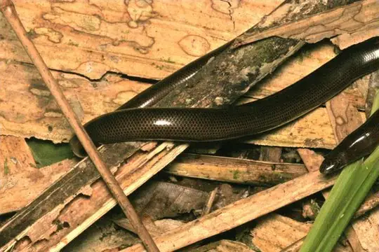
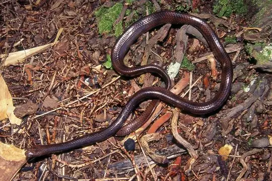
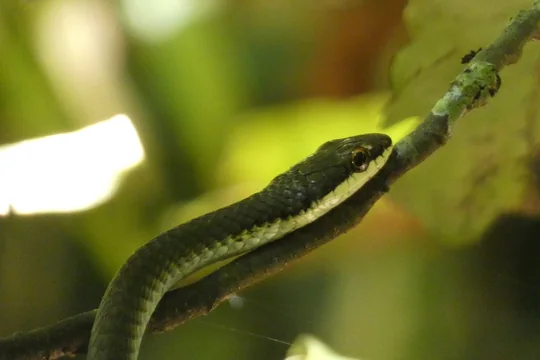
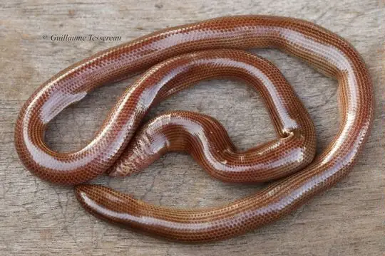
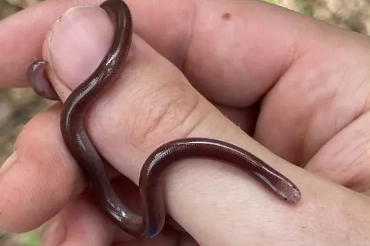
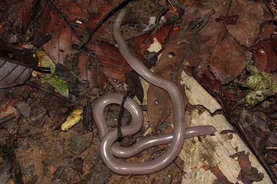
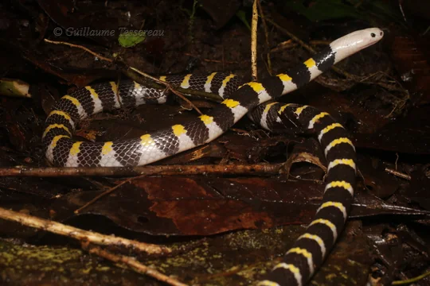
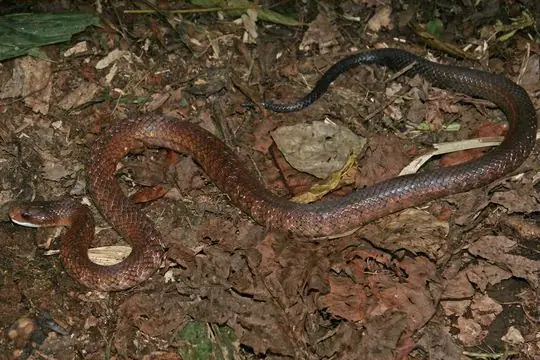
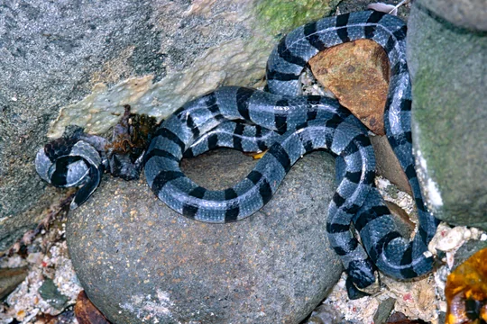

Snakes of Solomon Islands
16 living snake species are recorded in the Solomon Islands in SnakeList: 5 venomous and 11 non-venomous, from 4 families.
- 16living species
- 4families
Danger to people · tap a number to show only those snakes
- 0mildly venomous
- 0giant constrictors
Harmful = dangerously venomous + giant constrictors. Harmless = not venomous and not a giant constrictor. Mildly venomous snakes have no serious bites to people documented. Any snake can bite.
These totals count the unique living snake species SnakeList records in the Solomon Islands. A species counts if it is recorded anywhere in the country, so not every snake lives in every part of it.
In SnakeList’s checklist filters
How many of the 16 living species here each filter in the SnakeList app picks out – tap a number to show only those snakes.
Snake family4 types, 4 families
Type
Family
Habitats12 habitat groups
Habitats are estimated from where each snake is recorded and what kind of snake it is, as in the app; a snake can count in several.
Characteristics5 venomous, 2 constrictors
- 0snake eaters
Constrictor and Non-constrictor count only snakes whose family or genus is documented as constricting or not; the rest are not documented.
Other filters0 popular, 10 rare
- 0popular
- 0invasive
- 0extinct
Species
Showing 16 species
- No photo yetArboreal Blind SnakeRamphotyphlops angusticeps
- No photo yetBeck's Blind SnakeRamphotyphlops becki
 Bibron's Pacific BoaCandoia bibroni
Bibron's Pacific BoaCandoia bibroni
Bougainville Blind SnakeAcutotyphlops solomonis- No photo yetBougainville Coral SnakeParapistocalamus hedigeri

Crocker's Sea SnakeLaticauda crockeri
Green TreesnakeDendrelaphis calligaster
Kunua Blind SnakeAcutotyphlops kunuaensis
Melanesia BlindsnakeRamphotyphlops depressus
Olive Blind SnakeRamphotyphlops olivaceus- No photo yetRed Blind SnakeAcutotyphlops infralabialis
- No photo yetSmall-headed Blind Snake (mansuetus)Ramphotyphlops mansuetus
 Solomon Island Ground BoaCandoia paulsoni
Solomon Island Ground BoaCandoia paulsoni
Solomon's Small-eyed SnakeLoveridgelaps elapoides
Solomons Coral SnakeSalomonelaps par
Yellow-lipped Sea KraitLaticauda colubrina
No snakes in Solomon Islands match.
Solomon Islands’s snakes in numbers
- Families: Typhlopidae 8, Elapidae 5, Boidae 2, Colubridae 1.
- 7 are recorded in no other country or territory in SnakeList: Arboreal Blind Snake, Beck's Blind Snake, Crocker's Sea Snake, Red Blind Snake, Small-headed Blind Snake (mansuetus), Solomon's Small-eyed Snake, Solomons Coral Snake.
How precisely they are recorded
Of the 16 living species recorded in the Solomon Islands, 7 are recorded by province in SnakeList’s data; 9 are recorded only for the Solomon Islands as a whole, so the province pages list them as possible rather than recorded. SnakeList records each species by province, not by exact spot, so a species listed for a province may live in only part of it.
Provinces
The provinces where SnakeList records snakes, with how many living species are recorded in each. Each page has its species, venomous snakes, families, the species found only there, its cities and neighbours.
- Central 2 species
- Choiseul 2 species
- Guadalcanal 5 species
- Malaita 3 species
- Rennell and Bellona 3 species
- Western 2 species
No place matches that.